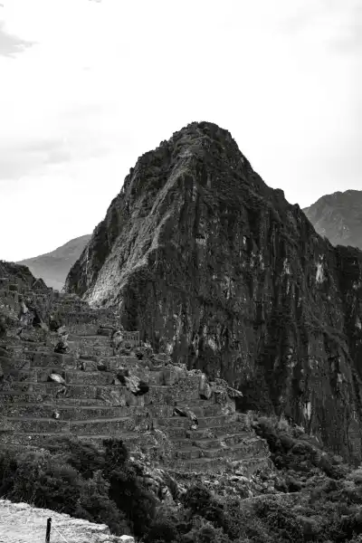
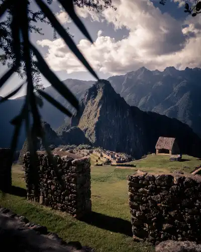
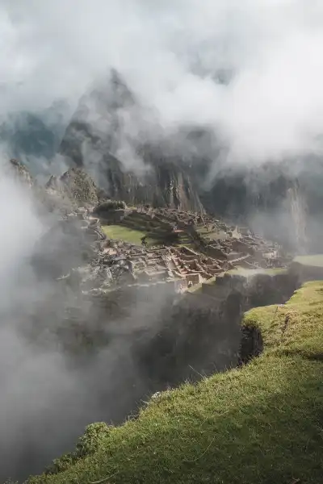
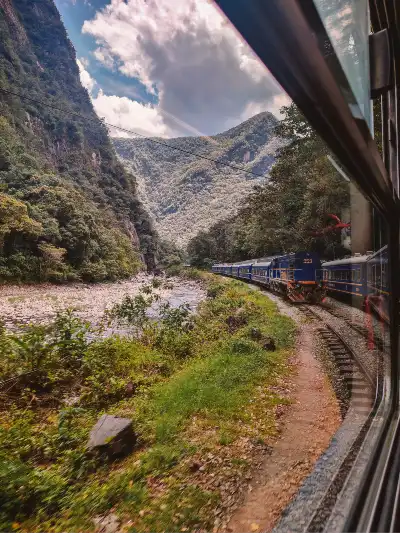
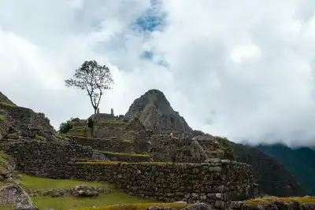
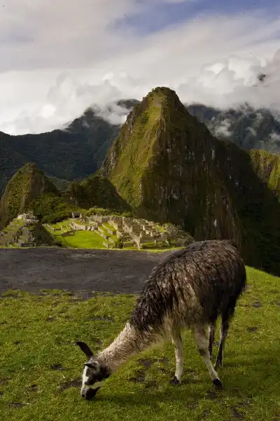

10 Thing to Know Before Visiting Machu Picchu
High in the Peruvian Andes, you'll find Machu Picchu, the lost city of the Incas, a must-see for any traveler. Here are 10 things you need to know before visiting Machu Picchu.
Did you know that the ruins of Machu Picchu were built as early as the 15th century? Although a lot of time has passed since then, they are still in good condition because they have been very well maintained.
The ruins are located on a hill surrounded by rainforest and the Urubamba River. A trip to the New Wonders of the World will undoubtedly be an unforgettable experience for you. However, to prepare for your visit as best as possible.
Let's get started!
- 1. Have all your Travel Documents with you
- 2. Shuttle Bus Ticket Instead of Hiking
- 3. Take the Right Equipment
- 4. There is a Fixed Route
- 5. Don’t Get Your Passport Stamped
- 6. Book Your Tickets Early Enough
- 7. Use the Restrooms Before Entering
- 8. Explore the Sacred Valley of the Incas
- 9. Decide on the “Best” Train Option
- 10. Overnight in Aguas Calientes
Where is Mapi?
Here we have the answer!





